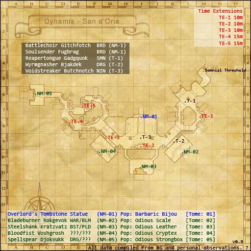

Description
Dynamis - San d'Oria is a Dynamis area in Dynamis.
Map

Notorious Monsters

Regular Monsters

References
External references describe their own server or retail rules. Documented Zenith changes take precedence.
Map credits: Map 1 — HorizonXI Wiki. Original game maps © SQUARE ENIX; redrawn maps retain the credited authorship and license.

Additional level-75 reference
Orc NMs in Dynamis have an additional TP attack:
Game Script
 Image source
Image source
Southern San d'Oria
Francmage: I never believed that my indifference to the state of other nations would cause harm to my beloved San d'Oria... As part of my penance, I will infuse the Timeless Hourglass with what guidance I can.
Adapted from Eden Wiki: Dynamis - San d'Oria · Contributors and history · CC BY-SA 4.0. Revision 8314. Layout, links and optional background text adapted for Zenith.